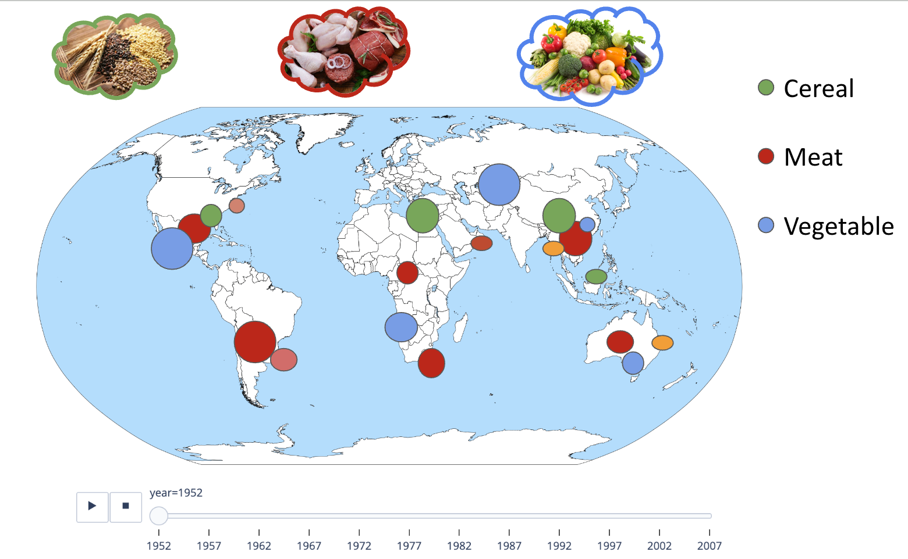

Diverse studies have revealed the importance of food on biological, cultural and psychological aspects. Biologically, food provides essential nutrients for development and maintenance of our bodies. Culturally, food plays a role in defining the identity of communities and cultures. Psychologically, food can have a significant impact on our moods and emotions.
In this website, we hope to visually present and compare important information such as the nutritional content of food, so that users can enjoy the interface and interact with it to have healthier eating habits and understand the diverse connections between food and human civilization.
Visualization of food ingredients.
Visualization of Country Production
